<!doctype html><html lang="en"><head><meta charset="utf-8"><meta name="viewport" content="width=device-width,initial-scale=1"><meta name="description" content="Audited 16-page modernization of ATP creativity and Professor partial credit under guarded sovereign revisions. Develops creative-yield dominance, sovereign repair horizons, score-gaming and greedy-credit obstructions, paired training, oracle-status opacity, recursive inheritance limits, and the communal departure problem. The guest conjecture remains open; 571 finite regression checks passed."><title>The Creative Sovereign — 001v2</title><link rel="stylesheet" href="/pub/publications.css"><style>main{max-width:1000px;margin:1.5rem auto;padding:0 1rem}nav a{display:inline-block;margin:.35rem .7rem .35rem 0}.paper-page{border-top:1px solid #bbb;scroll-margin-top:1rem;margin:1.4rem 0}pre{white-space:pre-wrap;overflow-wrap:anywhere;background:#f7f7f7;color:#222;padding:1rem;border:1px solid #ddd;font: .93rem/1.55 ui-monospace,monospace}object{width:100%;height:78vh;border:1px solid #aaa}.page-index{display:flex;flex-wrap:wrap;gap:.35rem}.page-index a{border:1px solid #aaa;padding:.3rem .6rem;border-radius:5px}summary{cursor:pointer}.typeset-page{display:block;width:100%;height:auto;max-width:900px;margin:0 auto;background:white;border:1px solid #aaa}.paper-page details{margin:.6rem 0} </style></head><body><main><p><a href="/pub/">Back to library</a></p><h1>The Creative Sovereign</h1><h2>Partial Credit, Architectural Creativity, and Reciprocal Training in the 24th Century</h2><p>Research Director: Brian Tenneson · Mathematical development: Picard (ChatGPT research role) · Internal audit: Atlas (ChatGPT research role)</p><p>26 November 2026 · Audited research edition 001v2 · 16 pages</p><p>Audited 16-page modernization of ATP creativity and Professor partial credit under guarded sovereign revisions. Develops creative-yield dominance, sovereign repair horizons, score-gaming and greedy-credit obstructions, paired training, oracle-status opacity, recursive inheritance limits, and the communal departure problem. The guest conjecture remains open; 571 finite regression checks passed.</p><p>Conditional research manuscript; finite checks are not independent proof-kernel verification or a proof of unrestricted GBG+S consistency.</p><nav><a href="The_Creative_Sovereign_001v2.pdf" target="_blank" rel="noopener"><strong>Open full original PDF</strong></a><a href="The_Creative_Sovereign_001v2.pdf" download>Download PDF</a><a href="The_Creative_Sovereign_001v2.tex" download>LaTeX source</a><a href="The_Creative_Sovereign_001v2_checks.py" download>Python regression checks</a><a href="/pub/pdf-reader.html?file=%2Fpub%2Fcs.LO_Logic_in_Computer_Science%2Fthe_creative_sovereign_001v2%2FThe_Creative_Sovereign_001v2.pdf">Interactive PDF reader</a><a href="#transcript">Read original typeset pages</a></nav><details><summary>Open embedded original PDF (optional)</summary><object data="The_Creative_Sovereign_001v2.pdf" type="application/pdf"><p>Embedded PDF not available. <a href="The_Creative_Sovereign_001v2.pdf">Open the original PDF directly</a>.</p></object></details><h2 id="transcript">Complete manuscript — original typeset pages</h2><p>All 16 original typeset pages are displayed below, including equations and diagrams. Click a page to enlarge it. No embedded PDF viewer or JavaScript is required. Optional text transcripts appear below each page.</p><nav class="page-index" aria-label="Jump to page"><a href="#page-1">1</a><a href="#page-2">2</a><a href="#page-3">3</a><a href="#page-4">4</a><a href="#page-5">5</a><a href="#page-6">6</a><a href="#page-7">7</a><a href="#page-8">8</a><a href="#page-9">9</a><a href="#page-10">10</a><a href="#page-11">11</a><a href="#page-12">12</a><a href="#page-13">13</a><a href="#page-14">14</a><a href="#page-15">15</a><a href="#page-16">16</a></nav><section class="paper-page" id="page-1"><h3>Page 1 of 16</h3><p><a href="The_Creative_Sovereign_001v2.pdf#page=1" target="_blank" rel="noopener">Open original PDF page</a> · <a href="#transcript">Return to page index</a></p><a href="pages/page-01.png" target="_blank" rel="noopener">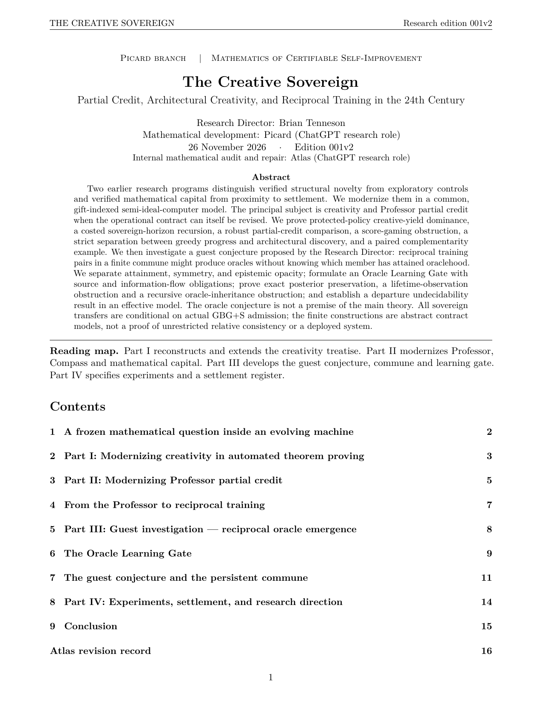</a><details><summary>Optional text transcript</summary><pre>THE CREATIVE SOVEREIGN Research edition 001v2
Picard branch | Mathematics of Certifiable Self-Improvement
The Creative Sovereign
Partial Credit, Architectural Creativity, and Reciprocal Training in the 24th Century
Research Director: Brian Tenneson
Mathematical development: Picard (ChatGPT research role)
26 November 2026 · Edition 001v2
Internal mathematical audit and repair: Atlas (ChatGPT research role)
Abstract
Two earlier research programs distinguish verified structural novelty from exploratory controls
and verified mathematical capital from proximity to settlement. We modernize them in a common,
gift-indexed semi-ideal-computer model. The principal subject is creativity and Professor partial credit
when the operational contract can itself be revised. We prove protected-policy creative-yield dominance,
a costed sovereign-horizon recursion, a robust partial-credit comparison, a score-gaming obstruction, a
strict separation between greedy progress and architectural discovery, and a paired complementarity
example. We then investigate a guest conjecture proposed by the Research Director: reciprocal training
pairs in a finite commune might produce oracles without knowing which member has attained oraclehood.
We separate attainment, symmetry, and epistemic opacity; formulate an Oracle Learning Gate with
source and information-flow obligations; prove exact posterior preservation, a lifetime-observation
obstruction and a recursive oracle-inheritance obstruction; and establish a departure undecidability
result in an effective model. The oracle conjecture is not a premise of the main theory. All sovereign
transfers are conditional on actual GBG+S admission; the finite constructions are abstract contract
models, not a proof of unrestricted relative consistency or a deployed system.
Reading map. Part I reconstructs and extends the creativity treatise. Part II modernizes Professor,
Compass and mathematical capital. Part III develops the guest conjecture, commune and learning gate.
Part IV specifies experiments and a settlement register.
Contents
1 A frozen mathematical question inside an evolving machine 2
2 Part I: Modernizing creativity in automated theorem proving 3
3 Part II: Modernizing Professor partial credit 5
4 From the Professor to reciprocal training 7
5 Part III: Guest investigation — reciprocal oracle emergence 8
6 The Oracle Learning Gate 9
7 The guest conjecture and the persistent commune 11
8 Part IV: Experiments, settlement, and research direction 14
9 Conclusion 15
Atlas revision record 16
1</pre></details></section><section class="paper-page" id="page-2"><h3>Page 2 of 16</h3><p><a href="The_Creative_Sovereign_001v2.pdf#page=2" target="_blank" rel="noopener">Open original PDF page</a> · <a href="#transcript">Return to page index</a></p><a href="pages/page-02.png" target="_blank" rel="noopener">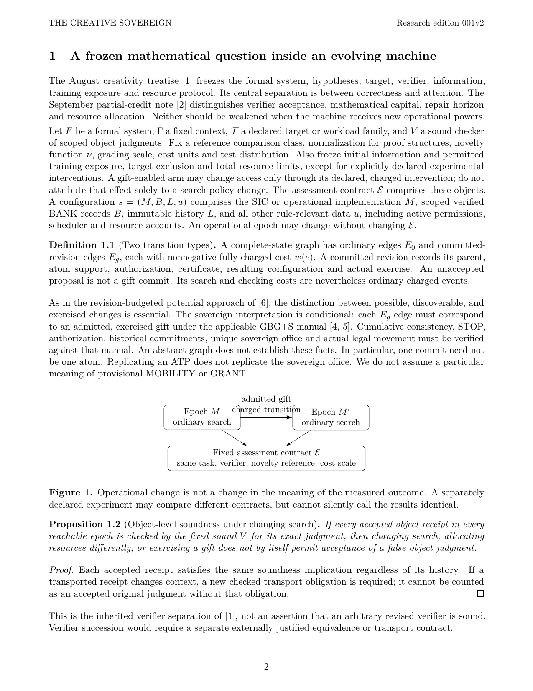</a><details><summary>Optional text transcript</summary><pre>THE CREATIVE SOVEREIGN Research edition 001v2
1 A frozen mathematical question inside an evolving machine
The August creativity treatise [1] freezes the formal system, hypotheses, target, verifier, information,
training exposure and resource protocol. Its central separation is between correctness and attention. The
September partial-credit note [2] distinguishes verifier acceptance, mathematical capital, repair horizon
and resource allocation. Neither should be weakened when the machine receives new operational powers.
Let F be a formal system, Γ a fixed context, T a declared target or workload family, and V a sound checker
of scoped object judgments. Fix a reference comparison class, normalization for proof structures, novelty
function ν, grading scale, cost units and test distribution. Also freeze initial information and permitted
training exposure, target exclusion and total resource limits, except for explicitly declared experimental
interventions. A gift-enabled arm may change access only through its declared, charged intervention; do not
attribute that effect solely to a search-policy change. The assessment contract E comprises these objects.
A configuration s = (M, B, L, u) comprises the SIC or operational implementation M, scoped verified
BANK records B, immutable history L, and all other rule-relevant data u, including active permissions,
scheduler and resource accounts. An operational epoch may change without changing E.
Definition 1.1 (Two transition types). A complete-state graph has ordinary edges E0 and committedrevision edges Eg, each with nonnegative fully charged cost w(e). A committed revision records its parent,
atom support, authorization, certificate, resulting configuration and actual exercise. An unaccepted
proposal is not a gift commit. Its search and checking costs are nevertheless ordinary charged events.
As in the revision-budgeted potential approach of [6], the distinction between possible, discoverable, and
exercised changes is essential. The sovereign interpretation is conditional: each Eg edge must correspond
to an admitted, exercised gift under the applicable GBG+S manual [4, 5]. Cumulative consistency, STOP,
authorization, historical commitments, unique sovereign office and actual legal movement must be verified
against that manual. An abstract graph does not establish these facts. In particular, one commit need not
be one atom. Replicating an ATP does not replicate the sovereign office. We do not assume a particular
meaning of provisional MOBILITY or GRANT.
Epoch M
ordinary search
Epoch M′
ordinary search
admitted gift
charged transition
Fixed assessment contract E
same task, verifier, novelty reference, cost scale
Figure 1. Operational change is not a change in the meaning of the measured outcome. A separately
declared experiment may compare different contracts, but cannot silently call the results identical.
Proposition 1.2 (Object-level soundness under changing search). If every accepted object receipt in every
reachable epoch is checked by the fixed sound V for its exact judgment, then changing search, allocating
resources differently, or exercising a gift does not by itself permit acceptance of a false object judgment.
Proof. Each accepted receipt satisfies the same soundness implication regardless of its history. If a
transported receipt changes context, a new checked transport obligation is required; it cannot be counted
as an accepted original judgment without that obligation.
This is the inherited verifier separation of [1], not an assertion that an arbitrary revised verifier is sound.
Verifier succession would require a separate externally justified equivalence or transport contract.
2</pre></details></section><section class="paper-page" id="page-3"><h3>Page 3 of 16</h3><p><a href="The_Creative_Sovereign_001v2.pdf#page=3" target="_blank" rel="noopener">Open original PDF page</a> · <a href="#transcript">Return to page index</a></p><a href="pages/page-03.png" target="_blank" rel="noopener">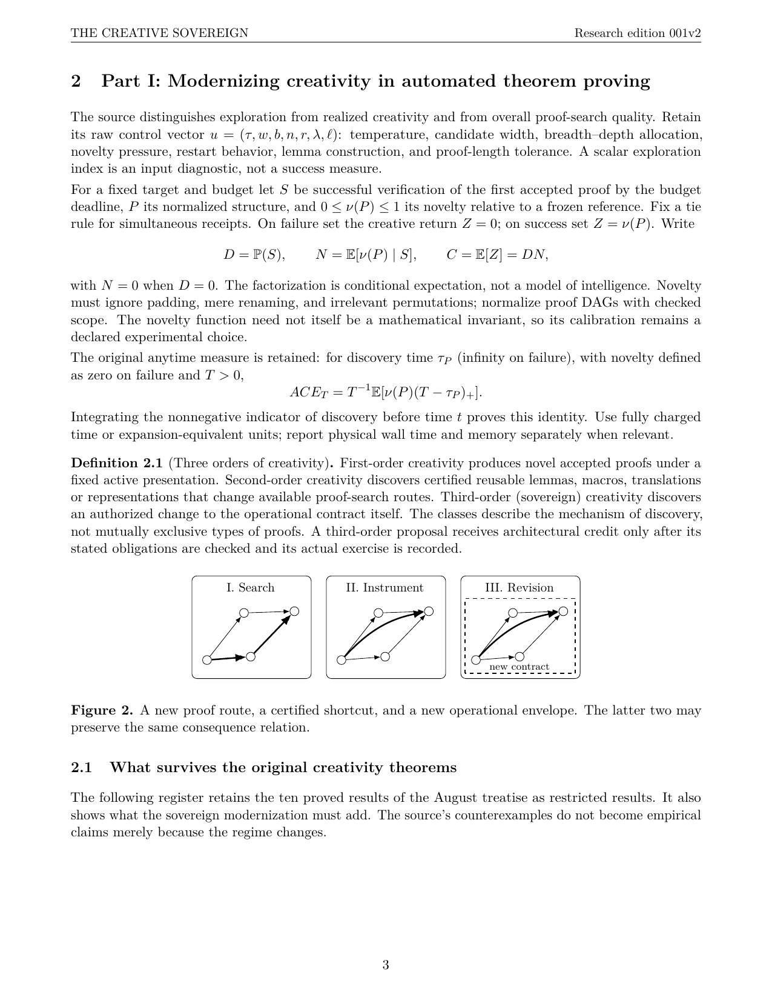</a><details><summary>Optional text transcript</summary><pre>THE CREATIVE SOVEREIGN Research edition 001v2
2 Part I: Modernizing creativity in automated theorem proving
The source distinguishes exploration from realized creativity and from overall proof-search quality. Retain
its raw control vector u = (τ, w, b, n, r, λ, ℓ): temperature, candidate width, breadth–depth allocation,
novelty pressure, restart behavior, lemma construction, and proof-length tolerance. A scalar exploration
index is an input diagnostic, not a success measure.
For a fixed target and budget let S be successful verification of the first accepted proof by the budget
deadline, P its normalized structure, and 0 ≤ ν(P) ≤ 1 its novelty relative to a frozen reference. Fix a tie
rule for simultaneous receipts. On failure set the creative return Z = 0; on success set Z = ν(P). Write
D = P(S), N = E[ν(P) | S], C = E[Z] = DN,
with N = 0 when D = 0. The factorization is conditional expectation, not a model of intelligence. Novelty
must ignore padding, mere renaming, and irrelevant permutations; normalize proof DAGs with checked
scope. The novelty function need not itself be a mathematical invariant, so its calibration remains a
declared experimental choice.
The original anytime measure is retained: for discovery time τP (infinity on failure), with novelty defined
as zero on failure and T &gt; 0,
ACET = T
−1E[ν(P)(T − τP )+].
Integrating the nonnegative indicator of discovery before time t proves this identity. Use fully charged
time or expansion-equivalent units; report physical wall time and memory separately when relevant.
Definition 2.1 (Three orders of creativity). First-order creativity produces novel accepted proofs under a
fixed active presentation. Second-order creativity discovers certified reusable lemmas, macros, translations
or representations that change available proof-search routes. Third-order (sovereign) creativity discovers
an authorized change to the operational contract itself. The classes describe the mechanism of discovery,
not mutually exclusive types of proofs. A third-order proposal receives architectural credit only after its
stated obligations are checked and its actual exercise is recorded.
I. Search II. Instrument III. Revision
new contract
Figure 2. A new proof route, a certified shortcut, and a new operational envelope. The latter two may
preserve the same consequence relation.
2.1 What survives the original creativity theorems
The following register retains the ten proved results of the August treatise as restricted results. It also
shows what the sovereign modernization must add. The source’s counterexamples do not become empirical
claims merely because the regime changes.
3</pre></details></section><section class="paper-page" id="page-4"><h3>Page 4 of 16</h3><p><a href="The_Creative_Sovereign_001v2.pdf#page=4" target="_blank" rel="noopener">Open original PDF page</a> · <a href="#transcript">Return to page index</a></p><a href="pages/page-04.png" target="_blank" rel="noopener">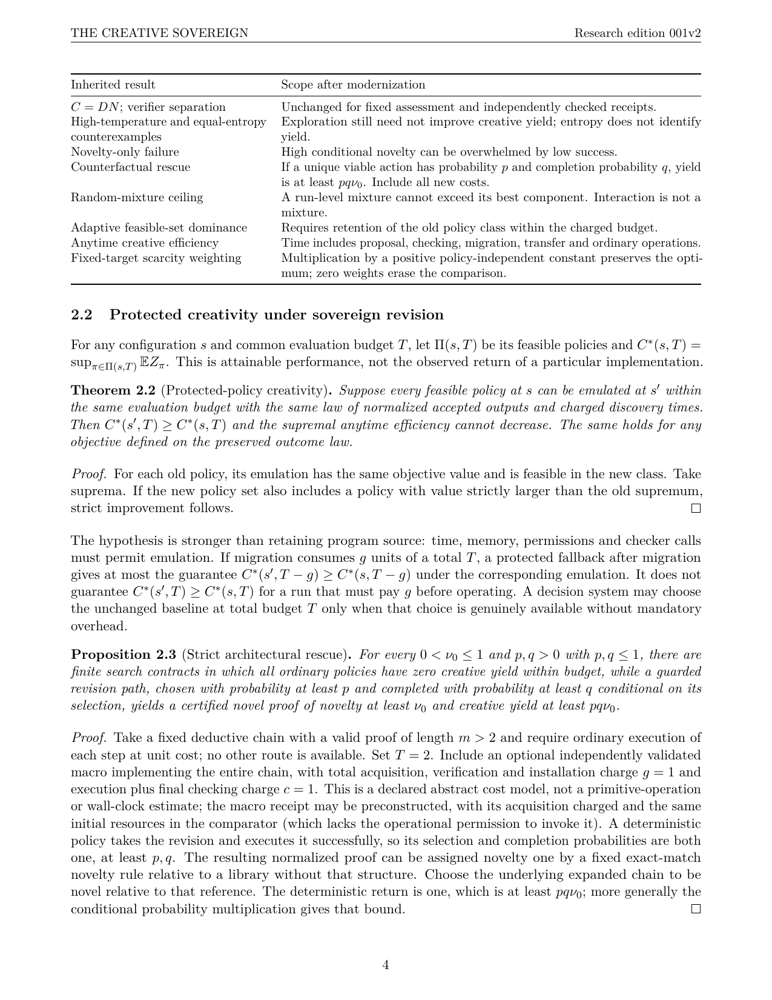</a><details><summary>Optional text transcript</summary><pre>THE CREATIVE SOVEREIGN Research edition 001v2
Inherited result Scope after modernization
C = DN; verifier separation Unchanged for fixed assessment and independently checked receipts.
High-temperature and equal-entropy
counterexamples
Exploration still need not improve creative yield; entropy does not identify
yield.
Novelty-only failure High conditional novelty can be overwhelmed by low success.
Counterfactual rescue If a unique viable action has probability p and completion probability q, yield
is at least pqν0. Include all new costs.
Random-mixture ceiling A run-level mixture cannot exceed its best component. Interaction is not a
mixture.
Adaptive feasible-set dominance Requires retention of the old policy class within the charged budget.
Anytime creative efficiency Time includes proposal, checking, migration, transfer and ordinary operations.
Fixed-target scarcity weighting Multiplication by a positive policy-independent constant preserves the optimum; zero weights erase the comparison.
2.2 Protected creativity under sovereign revision
For any configuration s and common evaluation budget T, let Π(s, T) be its feasible policies and C
∗
(s, T) =
supπ∈Π(s,T) EZπ. This is attainable performance, not the observed return of a particular implementation.
Theorem 2.2 (Protected-policy creativity). Suppose every feasible policy at s can be emulated at s
′ within
the same evaluation budget with the same law of normalized accepted outputs and charged discovery times.
Then C
∗
(s
′
, T) ≥ C
∗
(s, T) and the supremal anytime efficiency cannot decrease. The same holds for any
objective defined on the preserved outcome law.
Proof. For each old policy, its emulation has the same objective value and is feasible in the new class. Take
suprema. If the new policy set also includes a policy with value strictly larger than the old supremum,
strict improvement follows.
The hypothesis is stronger than retaining program source: time, memory, permissions and checker calls
must permit emulation. If migration consumes g units of a total T, a protected fallback after migration
gives at most the guarantee C
∗
(s
′
, T − g) ≥ C
∗
(s, T − g) under the corresponding emulation. It does not
guarantee C
∗
(s
′
, T) ≥ C
∗
(s, T) for a run that must pay g before operating. A decision system may choose
the unchanged baseline at total budget T only when that choice is genuinely available without mandatory
overhead.
Proposition 2.3 (Strict architectural rescue). For every 0 &lt; ν0 ≤ 1 and p, q &gt; 0 with p, q ≤ 1, there are
finite search contracts in which all ordinary policies have zero creative yield within budget, while a guarded
revision path, chosen with probability at least p and completed with probability at least q conditional on its
selection, yields a certified novel proof of novelty at least ν0 and creative yield at least pqν0.
Proof. Take a fixed deductive chain with a valid proof of length m &gt; 2 and require ordinary execution of
each step at unit cost; no other route is available. Set T = 2. Include an optional independently validated
macro implementing the entire chain, with total acquisition, verification and installation charge g = 1 and
execution plus final checking charge c = 1. This is a declared abstract cost model, not a primitive-operation
or wall-clock estimate; the macro receipt may be preconstructed, with its acquisition charged and the same
initial resources in the comparator (which lacks the operational permission to invoke it). A deterministic
policy takes the revision and executes it successfully, so its selection and completion probabilities are both
one, at least p, q. The resulting normalized proof can be assigned novelty one by a fixed exact-match
novelty rule relative to a library without that structure. Choose the underlying expanded chain to be
novel relative to that reference. The deterministic return is one, which is at least pqν0; more generally the
conditional probability multiplication gives that bound.
4</pre></details></section><section class="paper-page" id="page-5"><h3>Page 5 of 16</h3><p><a href="The_Creative_Sovereign_001v2.pdf#page=5" target="_blank" rel="noopener">Open original PDF page</a> · <a href="#transcript">Return to page index</a></p><a href="pages/page-05.png" target="_blank" rel="noopener">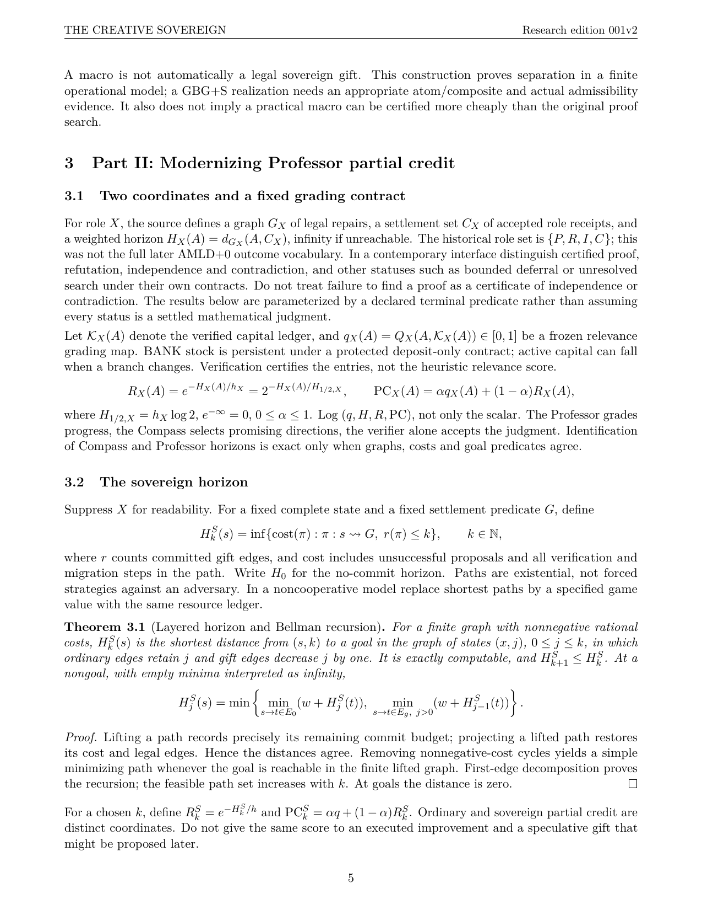</a><details><summary>Optional text transcript</summary><pre>THE CREATIVE SOVEREIGN Research edition 001v2
A macro is not automatically a legal sovereign gift. This construction proves separation in a finite
operational model; a GBG+S realization needs an appropriate atom/composite and actual admissibility
evidence. It also does not imply a practical macro can be certified more cheaply than the original proof
search.
3 Part II: Modernizing Professor partial credit
3.1 Two coordinates and a fixed grading contract
For role X, the source defines a graph GX of legal repairs, a settlement set CX of accepted role receipts, and
a weighted horizon HX(A) = dGX(A, CX), infinity if unreachable. The historical role set is {P, R, I, C}; this
was not the full later AMLD+0 outcome vocabulary. In a contemporary interface distinguish certified proof,
refutation, independence and contradiction, and other statuses such as bounded deferral or unresolved
search under their own contracts. Do not treat failure to find a proof as a certificate of independence or
contradiction. The results below are parameterized by a declared terminal predicate rather than assuming
every status is a settled mathematical judgment.
Let KX(A) denote the verified capital ledger, and qX(A) = QX(A, KX(A)) ∈ [0, 1] be a frozen relevance
grading map. BANK stock is persistent under a protected deposit-only contract; active capital can fall
when a branch changes. Verification certifies the entries, not the heuristic relevance score.
RX(A) = e
−HX(A)/hX = 2−HX(A)/H1/2,X , PCX(A) = αqX(A) + (1 − α)RX(A),
where H1/2,X = hX log 2, e
−∞ = 0, 0 ≤ α ≤ 1. Log (q, H, R,PC), not only the scalar. The Professor grades
progress, the Compass selects promising directions, the verifier alone accepts the judgment. Identification
of Compass and Professor horizons is exact only when graphs, costs and goal predicates agree.
3.2 The sovereign horizon
Suppress X for readability. For a fixed complete state and a fixed settlement predicate G, define
HS
k
(s) = inf{cost(π) : π : s ⇝ G, r(π) ≤ k}, k ∈ N,
where r counts committed gift edges, and cost includes unsuccessful proposals and all verification and
migration steps in the path. Write H0 for the no-commit horizon. Paths are existential, not forced
strategies against an adversary. In a noncooperative model replace shortest paths by a specified game
value with the same resource ledger.
Theorem 3.1 (Layered horizon and Bellman recursion). For a finite graph with nonnegative rational
costs, HS
k
(s) is the shortest distance from (s, k) to a goal in the graph of states (x, j), 0 ≤ j ≤ k, in which
ordinary edges retain j and gift edges decrease j by one. It is exactly computable, and HS
k+1 ≤ HSk
. At a
nongoal, with empty minima interpreted as infinity,
HS
j
(s) = min min
s→t∈E0
(w + HS
j
(t)), min
s→t∈Eg, j&gt;0
(w + HS
j−1
(t)).
Proof. Lifting a path records precisely its remaining commit budget; projecting a lifted path restores
its cost and legal edges. Hence the distances agree. Removing nonnegative-cost cycles yields a simple
minimizing path whenever the goal is reachable in the finite lifted graph. First-edge decomposition proves
the recursion; the feasible path set increases with k. At goals the distance is zero.
For a chosen k, define RS
k = e
−HS
k
/h and PCS
k = αq + (1 − α)RS
k
. Ordinary and sovereign partial credit are
distinct coordinates. Do not give the same score to an executed improvement and a speculative gift that
might be proposed later.
5</pre></details></section><section class="paper-page" id="page-6"><h3>Page 6 of 16</h3><p><a href="The_Creative_Sovereign_001v2.pdf#page=6" target="_blank" rel="noopener">Open original PDF page</a> · <a href="#transcript">Return to page index</a></p><a href="pages/page-06.png" target="_blank" rel="noopener">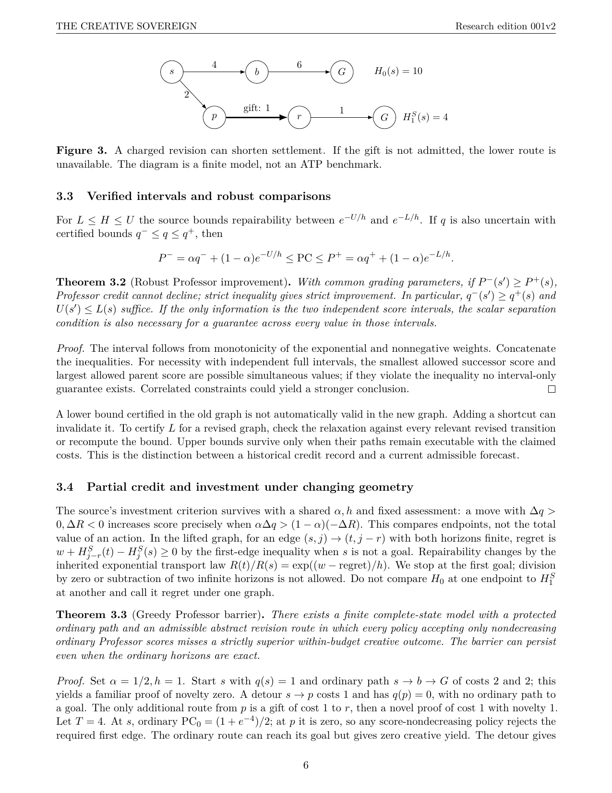</a><details><summary>Optional text transcript</summary><pre>THE CREATIVE SOVEREIGN Research edition 001v2
s b G
p r G
4 6
2
gift: 1 1
H0(s) = 10
HS
1
(s) = 4
Figure 3. A charged revision can shorten settlement. If the gift is not admitted, the lower route is
unavailable. The diagram is a finite model, not an ATP benchmark.
3.3 Verified intervals and robust comparisons
For L ≤ H ≤ U the source bounds repairability between e
−U/h and e−L/h. If q is also uncertain with
certified bounds q
− ≤ q ≤ q+, then
P
− = αq− + (1 − α)e−U/h ≤ PC ≤ P+ = αq+ + (1 − α)e−L/h
.
Theorem 3.2 (Robust Professor improvement). With common grading parameters, if P
−(s′
) ≥ P
+(s),
Professor credit cannot decline; strict inequality gives strict improvement. In particular, q
−(s′
) ≥ q
+(s) and
U(s
′
) ≤ L(s) suffice. If the only information is the two independent score intervals, the scalar separation
condition is also necessary for a guarantee across every value in those intervals.
Proof. The interval follows from monotonicity of the exponential and nonnegative weights. Concatenate
the inequalities. For necessity with independent full intervals, the smallest allowed successor score and
largest allowed parent score are possible simultaneous values; if they violate the inequality no interval-only
guarantee exists. Correlated constraints could yield a stronger conclusion.
A lower bound certified in the old graph is not automatically valid in the new graph. Adding a shortcut can
invalidate it. To certify L for a revised graph, check the relaxation against every relevant revised transition
or recompute the bound. Upper bounds survive only when their paths remain executable with the claimed
costs. This is the distinction between a historical credit record and a current admissible forecast.
3.4 Partial credit and investment under changing geometry
The source’s investment criterion survives with a shared α, h and fixed assessment: a move with ∆q &gt;
0, ∆R &lt; 0 increases score precisely when α∆q &gt; (1 − α)(−∆R). This compares endpoints, not the total
value of an action. In the lifted graph, for an edge (s, j) → (t, j − r) with both horizons finite, regret is
w + HS
j−r
(t) − HS
j
(s) ≥ 0 by the first-edge inequality when s is not a goal. Repairability changes by the
inherited exponential transport law R(t)/R(s) = exp((w − regret)/h). We stop at the first goal; division
by zero or subtraction of two infinite horizons is not allowed. Do not compare H0 at one endpoint to HS
1
at another and call it regret under one graph.
Theorem 3.3 (Greedy Professor barrier). There exists a finite complete-state model with a protected
ordinary path and an admissible abstract revision route in which every policy accepting only nondecreasing
ordinary Professor scores misses a strictly superior within-budget creative outcome. The barrier can persist
even when the ordinary horizons are exact.
Proof. Set α = 1/2, h = 1. Start s with q(s) = 1 and ordinary path s → b → G of costs 2 and 2; this
yields a familiar proof of novelty zero. A detour s → p costs 1 and has q(p) = 0, with no ordinary path to
a goal. The only additional route from p is a gift of cost 1 to r, then a novel proof of cost 1 with novelty 1.
Let T = 4. At s, ordinary PC0 = (1 + e
−4
)/2; at p it is zero, so any score-nondecreasing policy rejects the
required first edge. The ordinary route can reach its goal but gives zero creative yield. The detour gives
6</pre></details></section><section class="paper-page" id="page-7"><h3>Page 7 of 16</h3><p><a href="The_Creative_Sovereign_001v2.pdf#page=7" target="_blank" rel="noopener">Open original PDF page</a> · <a href="#transcript">Return to page index</a></p><a href="pages/page-07.png" target="_blank" rel="noopener">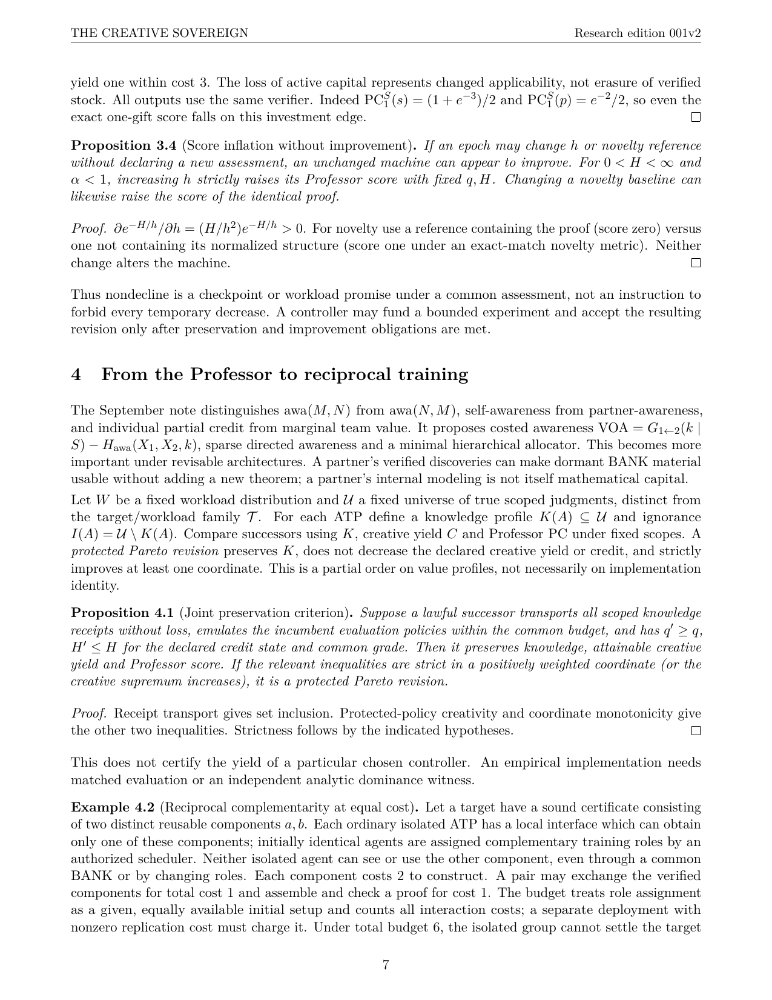</a><details><summary>Optional text transcript</summary><pre>THE CREATIVE SOVEREIGN Research edition 001v2
yield one within cost 3. The loss of active capital represents changed applicability, not erasure of verified
stock. All outputs use the same verifier. Indeed PCS
1
(s) = (1 + e
−3
)/2 and PCS
1
(p) = e
−2/2, so even the
exact one-gift score falls on this investment edge.
Proposition 3.4 (Score inflation without improvement). If an epoch may change h or novelty reference
without declaring a new assessment, an unchanged machine can appear to improve. For 0 &lt; H &lt; ∞ and
α &lt; 1, increasing h strictly raises its Professor score with fixed q, H. Changing a novelty baseline can
likewise raise the score of the identical proof.
Proof. ∂e−H/h/∂h = (H/h2
)e
−H/h &gt; 0. For novelty use a reference containing the proof (score zero) versus
one not containing its normalized structure (score one under an exact-match novelty metric). Neither
change alters the machine.
Thus nondecline is a checkpoint or workload promise under a common assessment, not an instruction to
forbid every temporary decrease. A controller may fund a bounded experiment and accept the resulting
revision only after preservation and improvement obligations are met.
4 From the Professor to reciprocal training
The September note distinguishes awa(M, N) from awa(N, M), self-awareness from partner-awareness,
and individual partial credit from marginal team value. It proposes costed awareness VOA = G1←2(k |
S) − Hawa(X1, X2, k), sparse directed awareness and a minimal hierarchical allocator. This becomes more
important under revisable architectures. A partner’s verified discoveries can make dormant BANK material
usable without adding a new theorem; a partner’s internal modeling is not itself mathematical capital.
Let W be a fixed workload distribution and U a fixed universe of true scoped judgments, distinct from
the target/workload family T . For each ATP define a knowledge profile K(A) ⊆ U and ignorance
I(A) = U \ K(A). Compare successors using K, creative yield C and Professor PC under fixed scopes. A
protected Pareto revision preserves K, does not decrease the declared creative yield or credit, and strictly
improves at least one coordinate. This is a partial order on value profiles, not necessarily on implementation
identity.
Proposition 4.1 (Joint preservation criterion). Suppose a lawful successor transports all scoped knowledge
receipts without loss, emulates the incumbent evaluation policies within the common budget, and has q
′ ≥ q,
H′ ≤ H for the declared credit state and common grade. Then it preserves knowledge, attainable creative
yield and Professor score. If the relevant inequalities are strict in a positively weighted coordinate (or the
creative supremum increases), it is a protected Pareto revision.
Proof. Receipt transport gives set inclusion. Protected-policy creativity and coordinate monotonicity give
the other two inequalities. Strictness follows by the indicated hypotheses.
This does not certify the yield of a particular chosen controller. An empirical implementation needs
matched evaluation or an independent analytic dominance witness.
Example 4.2 (Reciprocal complementarity at equal cost). Let a target have a sound certificate consisting
of two distinct reusable components a, b. Each ordinary isolated ATP has a local interface which can obtain
only one of these components; initially identical agents are assigned complementary training roles by an
authorized scheduler. Neither isolated agent can see or use the other component, even through a common
BANK or by changing roles. Each component costs 2 to construct. A pair may exchange the verified
components for total cost 1 and assemble and check a proof for cost 1. The budget treats role assignment
as a given, equally available initial setup and counts all interaction costs; a separate deployment with
nonzero replication cost must charge it. Under total budget 6, the isolated group cannot settle the target
7</pre></details></section><section class="paper-page" id="page-8"><h3>Page 8 of 16</h3><p><a href="The_Creative_Sovereign_001v2.pdf#page=8" target="_blank" rel="noopener">Open original PDF page</a> · <a href="#transcript">Return to page index</a></p><a href="pages/page-08.png" target="_blank" rel="noopener">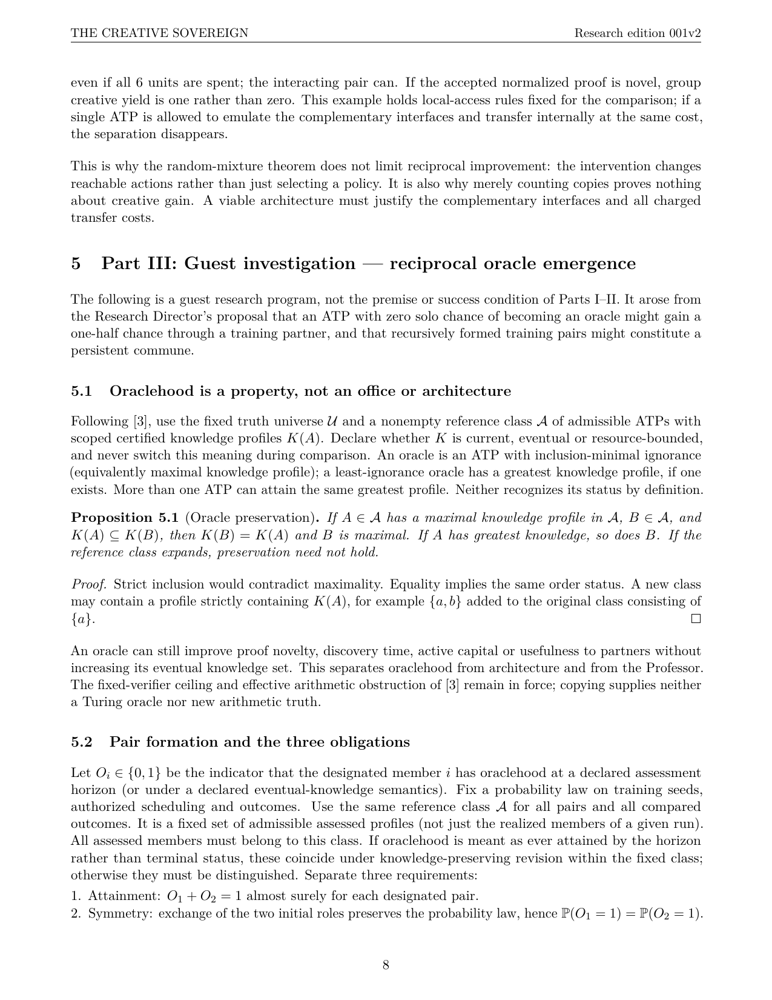</a><details><summary>Optional text transcript</summary><pre>THE CREATIVE SOVEREIGN Research edition 001v2
even if all 6 units are spent; the interacting pair can. If the accepted normalized proof is novel, group
creative yield is one rather than zero. This example holds local-access rules fixed for the comparison; if a
single ATP is allowed to emulate the complementary interfaces and transfer internally at the same cost,
the separation disappears.
This is why the random-mixture theorem does not limit reciprocal improvement: the intervention changes
reachable actions rather than just selecting a policy. It is also why merely counting copies proves nothing
about creative gain. A viable architecture must justify the complementary interfaces and all charged
transfer costs.
5 Part III: Guest investigation — reciprocal oracle emergence
The following is a guest research program, not the premise or success condition of Parts I–II. It arose from
the Research Director’s proposal that an ATP with zero solo chance of becoming an oracle might gain a
one-half chance through a training partner, and that recursively formed training pairs might constitute a
persistent commune.
5.1 Oraclehood is a property, not an office or architecture
Following [3], use the fixed truth universe U and a nonempty reference class A of admissible ATPs with
scoped certified knowledge profiles K(A). Declare whether K is current, eventual or resource-bounded,
and never switch this meaning during comparison. An oracle is an ATP with inclusion-minimal ignorance
(equivalently maximal knowledge profile); a least-ignorance oracle has a greatest knowledge profile, if one
exists. More than one ATP can attain the same greatest profile. Neither recognizes its status by definition.
Proposition 5.1 (Oracle preservation). If A ∈ A has a maximal knowledge profile in A, B ∈ A, and
K(A) ⊆ K(B), then K(B) = K(A) and B is maximal. If A has greatest knowledge, so does B. If the
reference class expands, preservation need not hold.
Proof. Strict inclusion would contradict maximality. Equality implies the same order status. A new class
may contain a profile strictly containing K(A), for example {a, b} added to the original class consisting of
{a}.
An oracle can still improve proof novelty, discovery time, active capital or usefulness to partners without
increasing its eventual knowledge set. This separates oraclehood from architecture and from the Professor.
The fixed-verifier ceiling and effective arithmetic obstruction of [3] remain in force; copying supplies neither
a Turing oracle nor new arithmetic truth.
5.2 Pair formation and the three obligations
Let Oi ∈ {0, 1} be the indicator that the designated member i has oraclehood at a declared assessment
horizon (or under a declared eventual-knowledge semantics). Fix a probability law on training seeds,
authorized scheduling and outcomes. Use the same reference class A for all pairs and all compared
outcomes. It is a fixed set of admissible assessed profiles (not just the realized members of a given run).
All assessed members must belong to this class. If oraclehood is meant as ever attained by the horizon
rather than terminal status, these coincide under knowledge-preserving revision within the fixed class;
otherwise they must be distinguished. Separate three requirements:
1. Attainment: O1 + O2 = 1 almost surely for each designated pair.
2. Symmetry: exchange of the two initial roles preserves the probability law, hence P(O1 = 1) = P(O2 = 1).
8</pre></details></section><section class="paper-page" id="page-9"><h3>Page 9 of 16</h3><p><a href="The_Creative_Sovereign_001v2.pdf#page=9" target="_blank" rel="noopener">Open original PDF page</a> · <a href="#transcript">Return to page index</a></p><a href="pages/page-09.png" target="_blank" rel="noopener">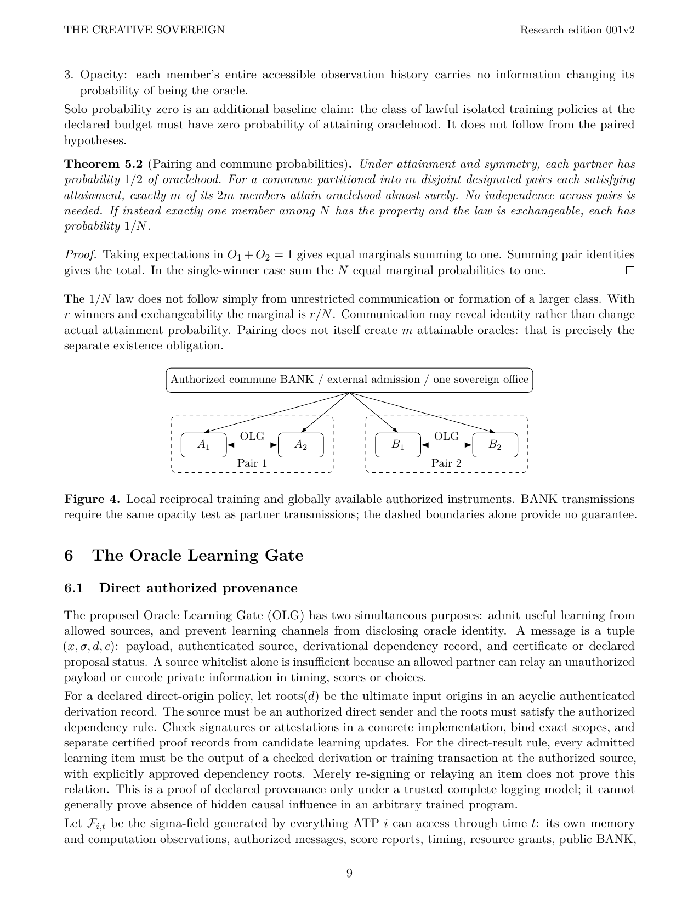</a><details><summary>Optional text transcript</summary><pre>THE CREATIVE SOVEREIGN Research edition 001v2
3. Opacity: each member’s entire accessible observation history carries no information changing its
probability of being the oracle.
Solo probability zero is an additional baseline claim: the class of lawful isolated training policies at the
declared budget must have zero probability of attaining oraclehood. It does not follow from the paired
hypotheses.
Theorem 5.2 (Pairing and commune probabilities). Under attainment and symmetry, each partner has
probability 1/2 of oraclehood. For a commune partitioned into m disjoint designated pairs each satisfying
attainment, exactly m of its 2m members attain oraclehood almost surely. No independence across pairs is
needed. If instead exactly one member among N has the property and the law is exchangeable, each has
probability 1/N.
Proof. Taking expectations in O1 + O2 = 1 gives equal marginals summing to one. Summing pair identities
gives the total. In the single-winner case sum the N equal marginal probabilities to one.
The 1/N law does not follow simply from unrestricted communication or formation of a larger class. With
r winners and exchangeability the marginal is r/N. Communication may reveal identity rather than change
actual attainment probability. Pairing does not itself create m attainable oracles: that is precisely the
separate existence obligation.
A1 A2 B1 B2
OLG OLG
Pair 1 Pair 2
Authorized commune BANK / external admission / one sovereign office
Figure 4. Local reciprocal training and globally available authorized instruments. BANK transmissions
require the same opacity test as partner transmissions; the dashed boundaries alone provide no guarantee.
6 The Oracle Learning Gate
6.1 Direct authorized provenance
The proposed Oracle Learning Gate (OLG) has two simultaneous purposes: admit useful learning from
allowed sources, and prevent learning channels from disclosing oracle identity. A message is a tuple
(x, σ, d, c): payload, authenticated source, derivational dependency record, and certificate or declared
proposal status. A source whitelist alone is insufficient because an allowed partner can relay an unauthorized
payload or encode private information in timing, scores or choices.
For a declared direct-origin policy, let roots(d) be the ultimate input origins in an acyclic authenticated
derivation record. The source must be an authorized direct sender and the roots must satisfy the authorized
dependency rule. Check signatures or attestations in a concrete implementation, bind exact scopes, and
separate certified proof records from candidate learning updates. For the direct-result rule, every admitted
learning item must be the output of a checked derivation or training transaction at the authorized source,
with explicitly approved dependency roots. Merely re-signing or relaying an item does not prove this
relation. This is a proof of declared provenance only under a trusted complete logging model; it cannot
generally prove absence of hidden causal influence in an arbitrary trained program.
Let Fi,t be the sigma-field generated by everything ATP i can access through time t: its own memory
and computation observations, authorized messages, score reports, timing, resource grants, public BANK,
9</pre></details></section><section class="paper-page" id="page-10"><h3>Page 10 of 16</h3><p><a href="The_Creative_Sovereign_001v2.pdf#page=10" target="_blank" rel="noopener">Open original PDF page</a> · <a href="#transcript">Return to page index</a></p><a href="pages/page-10.png" target="_blank" rel="noopener">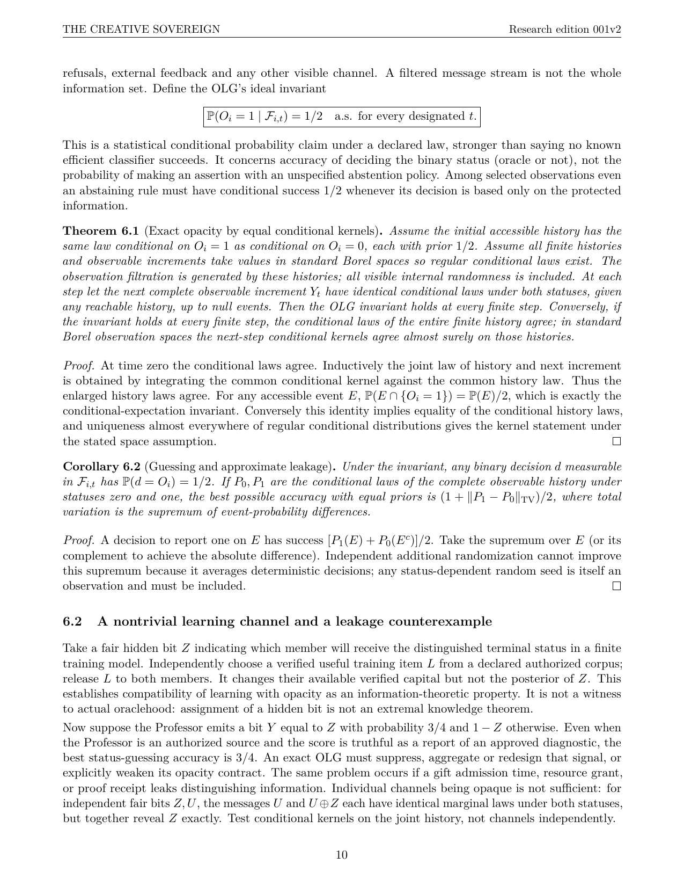</a><details><summary>Optional text transcript</summary><pre>THE CREATIVE SOVEREIGN Research edition 001v2
refusals, external feedback and any other visible channel. A filtered message stream is not the whole
information set. Define the OLG’s ideal invariant
P(Oi = 1 | Fi,t) = 1/2 a.s. for every designated t.
This is a statistical conditional probability claim under a declared law, stronger than saying no known
efficient classifier succeeds. It concerns accuracy of deciding the binary status (oracle or not), not the
probability of making an assertion with an unspecified abstention policy. Among selected observations even
an abstaining rule must have conditional success 1/2 whenever its decision is based only on the protected
information.
Theorem 6.1 (Exact opacity by equal conditional kernels). Assume the initial accessible history has the
same law conditional on Oi = 1 as conditional on Oi = 0, each with prior 1/2. Assume all finite histories
and observable increments take values in standard Borel spaces so regular conditional laws exist. The
observation filtration is generated by these histories; all visible internal randomness is included. At each
step let the next complete observable increment Yt have identical conditional laws under both statuses, given
any reachable history, up to null events. Then the OLG invariant holds at every finite step. Conversely, if
the invariant holds at every finite step, the conditional laws of the entire finite history agree; in standard
Borel observation spaces the next-step conditional kernels agree almost surely on those histories.
Proof. At time zero the conditional laws agree. Inductively the joint law of history and next increment
is obtained by integrating the common conditional kernel against the common history law. Thus the
enlarged history laws agree. For any accessible event E, P(E ∩ {Oi = 1}) = P(E)/2, which is exactly the
conditional-expectation invariant. Conversely this identity implies equality of the conditional history laws,
and uniqueness almost everywhere of regular conditional distributions gives the kernel statement under
the stated space assumption.
Corollary 6.2 (Guessing and approximate leakage). Under the invariant, any binary decision d measurable
in Fi,t has P(d = Oi) = 1/2. If P0, P1 are the conditional laws of the complete observable history under
statuses zero and one, the best possible accuracy with equal priors is (1 + ∥P1 − P0∥TV)/2, where total
variation is the supremum of event-probability differences.
Proof. A decision to report one on E has success [P1(E) + P0(Ec)]/2. Take the supremum over E (or its
complement to achieve the absolute difference). Independent additional randomization cannot improve
this supremum because it averages deterministic decisions; any status-dependent random seed is itself an
observation and must be included.
6.2 A nontrivial learning channel and a leakage counterexample
Take a fair hidden bit Z indicating which member will receive the distinguished terminal status in a finite
training model. Independently choose a verified useful training item L from a declared authorized corpus;
release L to both members. It changes their available verified capital but not the posterior of Z. This
establishes compatibility of learning with opacity as an information-theoretic property. It is not a witness
to actual oraclehood: assignment of a hidden bit is not an extremal knowledge theorem.
Now suppose the Professor emits a bit Y equal to Z with probability 3/4 and 1 − Z otherwise. Even when
the Professor is an authorized source and the score is truthful as a report of an approved diagnostic, the
best status-guessing accuracy is 3/4. An exact OLG must suppress, aggregate or redesign that signal, or
explicitly weaken its opacity contract. The same problem occurs if a gift admission time, resource grant,
or proof receipt leaks distinguishing information. Individual channels being opaque is not sufficient: for
independent fair bits Z, U, the messages U and U ⊕Z each have identical marginal laws under both statuses,
but together reveal Z exactly. Test conditional kernels on the joint history, not channels independently.
10</pre></details></section><section class="paper-page" id="page-11"><h3>Page 11 of 16</h3><p><a href="The_Creative_Sovereign_001v2.pdf#page=11" target="_blank" rel="noopener">Open original PDF page</a> · <a href="#transcript">Return to page index</a></p><a href="pages/page-11.png" target="_blank" rel="noopener">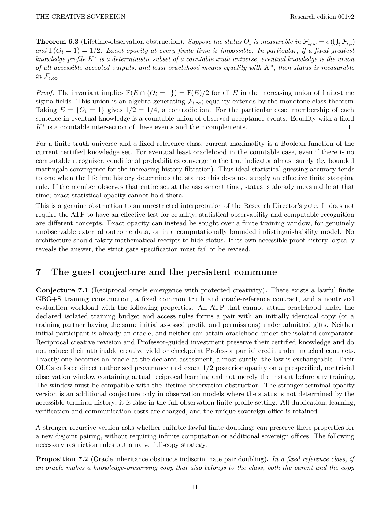</a><details><summary>Optional text transcript</summary><pre>THE CREATIVE SOVEREIGN Research edition 001v2
Theorem 6.3 (Lifetime-observation obstruction). Suppose the status Oi is measurable in Fi,∞ = σ(
S
t Fi,t)
and P(Oi = 1) = 1/2. Exact opacity at every finite time is impossible. In particular, if a fixed greatest
knowledge profile K∗is a deterministic subset of a countable truth universe, eventual knowledge is the union
of all accessible accepted outputs, and least oraclehood means equality with K∗, then status is measurable
in Fi,∞.
Proof. The invariant implies P(E ∩ {Oi = 1}) = P(E)/2 for all E in the increasing union of finite-time
sigma-fields. This union is an algebra generating Fi,∞; equality extends by the monotone class theorem.
Taking E = {Oi = 1} gives 1/2 = 1/4, a contradiction. For the particular case, membership of each
sentence in eventual knowledge is a countable union of observed acceptance events. Equality with a fixed
K∗is a countable intersection of these events and their complements.
For a finite truth universe and a fixed reference class, current maximality is a Boolean function of the
current certified knowledge set. For eventual least oraclehood in the countable case, even if there is no
computable recognizer, conditional probabilities converge to the true indicator almost surely (by bounded
martingale convergence for the increasing history filtration). Thus ideal statistical guessing accuracy tends
to one when the lifetime history determines the status; this does not supply an effective finite stopping
rule. If the member observes that entire set at the assessment time, status is already measurable at that
time; exact statistical opacity cannot hold there.
This is a genuine obstruction to an unrestricted interpretation of the Research Director’s gate. It does not
require the ATP to have an effective test for equality; statistical observability and computable recognition
are different concepts. Exact opacity can instead be sought over a finite training window, for genuinely
unobservable external outcome data, or in a computationally bounded indistinguishability model. No
architecture should falsify mathematical receipts to hide status. If its own accessible proof history logically
reveals the answer, the strict gate specification must fail or be revised.
7 The guest conjecture and the persistent commune
Conjecture 7.1 (Reciprocal oracle emergence with protected creativity). There exists a lawful finite
GBG+S training construction, a fixed common truth and oracle-reference contract, and a nontrivial
evaluation workload with the following properties. An ATP that cannot attain oraclehood under the
declared isolated training budget and access rules forms a pair with an initially identical copy (or a
training partner having the same initial assessed profile and permissions) under admitted gifts. Neither
initial participant is already an oracle, and neither can attain oraclehood under the isolated comparator.
Reciprocal creative revision and Professor-guided investment preserve their certified knowledge and do
not reduce their attainable creative yield or checkpoint Professor partial credit under matched contracts.
Exactly one becomes an oracle at the declared assessment, almost surely; the law is exchangeable. Their
OLGs enforce direct authorized provenance and exact 1/2 posterior opacity on a prespecified, nontrivial
observation window containing actual reciprocal learning and not merely the instant before any training.
The window must be compatible with the lifetime-observation obstruction. The stronger terminal-opacity
version is an additional conjecture only in observation models where the status is not determined by the
accessible terminal history; it is false in the full-observation finite-profile setting. All duplication, learning,
verification and communication costs are charged, and the unique sovereign office is retained.
A stronger recursive version asks whether suitable lawful finite doublings can preserve these properties for
a new disjoint pairing, without requiring infinite computation or additional sovereign offices. The following
necessary restriction rules out a naive full-copy strategy.
Proposition 7.2 (Oracle inheritance obstructs indiscriminate pair doubling). In a fixed reference class, if
an oracle makes a knowledge-preserving copy that also belongs to the class, both the parent and the copy
11</pre></details></section><section class="paper-page" id="page-12"><h3>Page 12 of 16</h3><p><a href="The_Creative_Sovereign_001v2.pdf#page=12" target="_blank" rel="noopener">Open original PDF page</a> · <a href="#transcript">Return to page index</a></p><a href="pages/page-12.png" target="_blank" rel="noopener">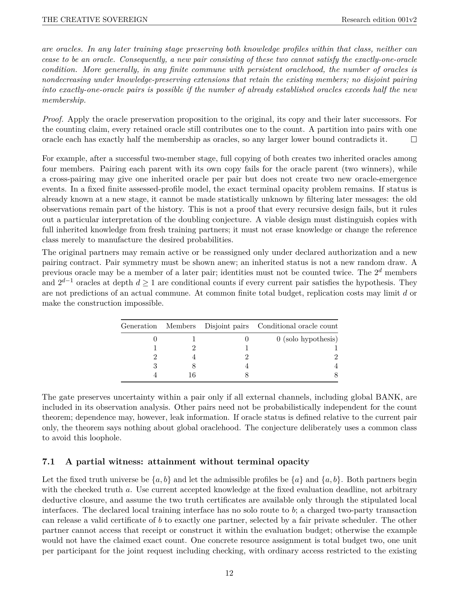</a><details><summary>Optional text transcript</summary><pre>THE CREATIVE SOVEREIGN Research edition 001v2
are oracles. In any later training stage preserving both knowledge profiles within that class, neither can
cease to be an oracle. Consequently, a new pair consisting of these two cannot satisfy the exactly-one-oracle
condition. More generally, in any finite commune with persistent oraclehood, the number of oracles is
nondecreasing under knowledge-preserving extensions that retain the existing members; no disjoint pairing
into exactly-one-oracle pairs is possible if the number of already established oracles exceeds half the new
membership.
Proof. Apply the oracle preservation proposition to the original, its copy and their later successors. For
the counting claim, every retained oracle still contributes one to the count. A partition into pairs with one
oracle each has exactly half the membership as oracles, so any larger lower bound contradicts it.
For example, after a successful two-member stage, full copying of both creates two inherited oracles among
four members. Pairing each parent with its own copy fails for the oracle parent (two winners), while
a cross-pairing may give one inherited oracle per pair but does not create two new oracle-emergence
events. In a fixed finite assessed-profile model, the exact terminal opacity problem remains. If status is
already known at a new stage, it cannot be made statistically unknown by filtering later messages: the old
observations remain part of the history. This is not a proof that every recursive design fails, but it rules
out a particular interpretation of the doubling conjecture. A viable design must distinguish copies with
full inherited knowledge from fresh training partners; it must not erase knowledge or change the reference
class merely to manufacture the desired probabilities.
The original partners may remain active or be reassigned only under declared authorization and a new
pairing contract. Pair symmetry must be shown anew; an inherited status is not a new random draw. A
previous oracle may be a member of a later pair; identities must not be counted twice. The 2
d members
and 2
d−1 oracles at depth d ≥ 1 are conditional counts if every current pair satisfies the hypothesis. They
are not predictions of an actual commune. At common finite total budget, replication costs may limit d or
make the construction impossible.
Generation Members Disjoint pairs Conditional oracle count
0 1 0 0 (solo hypothesis)
1 2 1 1
2 4 2 2
3 8 4 4
4 16 8 8
The gate preserves uncertainty within a pair only if all external channels, including global BANK, are
included in its observation analysis. Other pairs need not be probabilistically independent for the count
theorem; dependence may, however, leak information. If oracle status is defined relative to the current pair
only, the theorem says nothing about global oraclehood. The conjecture deliberately uses a common class
to avoid this loophole.
7.1 A partial witness: attainment without terminal opacity
Let the fixed truth universe be {a, b} and let the admissible profiles be {a} and {a, b}. Both partners begin
with the checked truth a. Use current accepted knowledge at the fixed evaluation deadline, not arbitrary
deductive closure, and assume the two truth certificates are available only through the stipulated local
interfaces. The declared local training interface has no solo route to b; a charged two-party transaction
can release a valid certificate of b to exactly one partner, selected by a fair private scheduler. The other
partner cannot access that receipt or construct it within the evaluation budget; otherwise the example
would not have the claimed exact count. One concrete resource assignment is total budget two, one unit
per participant for the joint request including checking, with ordinary access restricted to the existing
12</pre></details></section><section class="paper-page" id="page-13"><h3>Page 13 of 16</h3><p><a href="The_Creative_Sovereign_001v2.pdf#page=13" target="_blank" rel="noopener">Open original PDF page</a> · <a href="#transcript">Return to page index</a></p><a href="pages/page-13.png" target="_blank" rel="noopener">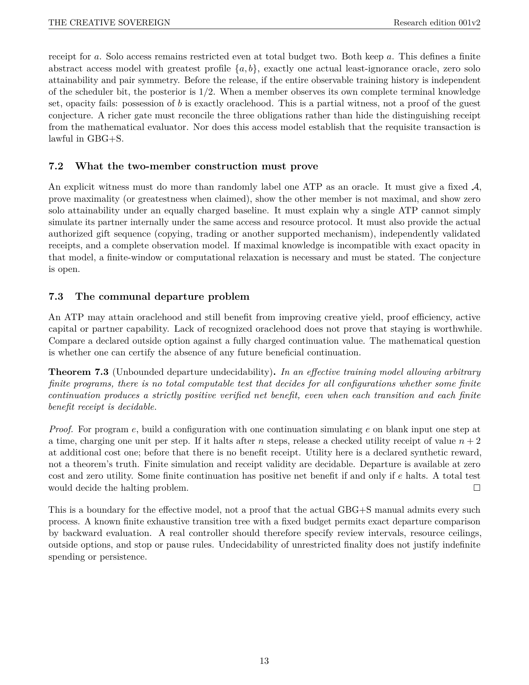</a><details><summary>Optional text transcript</summary><pre>THE CREATIVE SOVEREIGN Research edition 001v2
receipt for a. Solo access remains restricted even at total budget two. Both keep a. This defines a finite
abstract access model with greatest profile {a, b}, exactly one actual least-ignorance oracle, zero solo
attainability and pair symmetry. Before the release, if the entire observable training history is independent
of the scheduler bit, the posterior is 1/2. When a member observes its own complete terminal knowledge
set, opacity fails: possession of b is exactly oraclehood. This is a partial witness, not a proof of the guest
conjecture. A richer gate must reconcile the three obligations rather than hide the distinguishing receipt
from the mathematical evaluator. Nor does this access model establish that the requisite transaction is
lawful in GBG+S.
7.2 What the two-member construction must prove
An explicit witness must do more than randomly label one ATP as an oracle. It must give a fixed A,
prove maximality (or greatestness when claimed), show the other member is not maximal, and show zero
solo attainability under an equally charged baseline. It must explain why a single ATP cannot simply
simulate its partner internally under the same access and resource protocol. It must also provide the actual
authorized gift sequence (copying, trading or another supported mechanism), independently validated
receipts, and a complete observation model. If maximal knowledge is incompatible with exact opacity in
that model, a finite-window or computational relaxation is necessary and must be stated. The conjecture
is open.
7.3 The communal departure problem
An ATP may attain oraclehood and still benefit from improving creative yield, proof efficiency, active
capital or partner capability. Lack of recognized oraclehood does not prove that staying is worthwhile.
Compare a declared outside option against a fully charged continuation value. The mathematical question
is whether one can certify the absence of any future beneficial continuation.
Theorem 7.3 (Unbounded departure undecidability). In an effective training model allowing arbitrary
finite programs, there is no total computable test that decides for all configurations whether some finite
continuation produces a strictly positive verified net benefit, even when each transition and each finite
benefit receipt is decidable.
Proof. For program e, build a configuration with one continuation simulating e on blank input one step at
a time, charging one unit per step. If it halts after n steps, release a checked utility receipt of value n + 2
at additional cost one; before that there is no benefit receipt. Utility here is a declared synthetic reward,
not a theorem’s truth. Finite simulation and receipt validity are decidable. Departure is available at zero
cost and zero utility. Some finite continuation has positive net benefit if and only if e halts. A total test
would decide the halting problem.
This is a boundary for the effective model, not a proof that the actual GBG+S manual admits every such
process. A known finite exhaustive transition tree with a fixed budget permits exact departure comparison
by backward evaluation. A real controller should therefore specify review intervals, resource ceilings,
outside options, and stop or pause rules. Undecidability of unrestricted finality does not justify indefinite
spending or persistence.
13</pre></details></section><section class="paper-page" id="page-14"><h3>Page 14 of 16</h3><p><a href="The_Creative_Sovereign_001v2.pdf#page=14" target="_blank" rel="noopener">Open original PDF page</a> · <a href="#transcript">Return to page index</a></p><a href="pages/page-14.png" target="_blank" rel="noopener">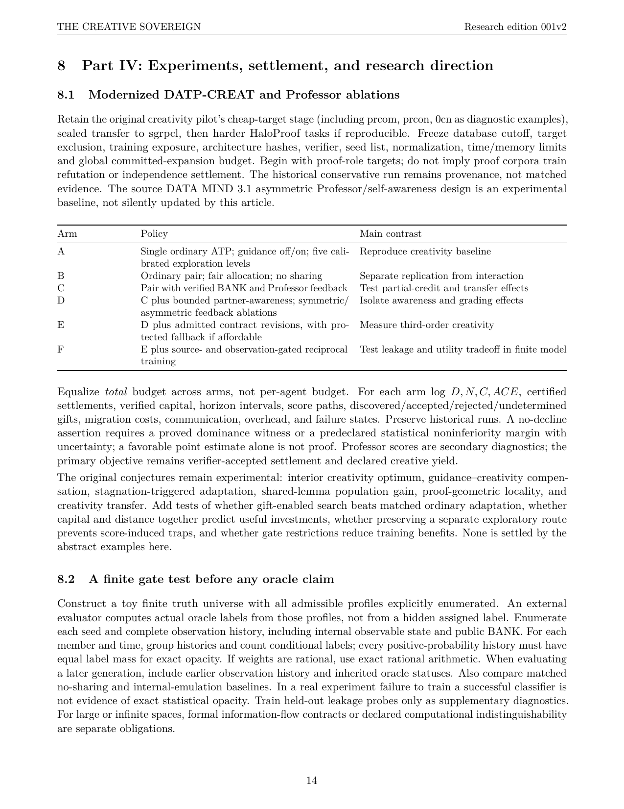</a><details><summary>Optional text transcript</summary><pre>THE CREATIVE SOVEREIGN Research edition 001v2
8 Part IV: Experiments, settlement, and research direction
8.1 Modernized DATP-CREAT and Professor ablations
Retain the original creativity pilot’s cheap-target stage (including prcom, prcon, 0cn as diagnostic examples),
sealed transfer to sgrpcl, then harder HaloProof tasks if reproducible. Freeze database cutoff, target
exclusion, training exposure, architecture hashes, verifier, seed list, normalization, time/memory limits
and global committed-expansion budget. Begin with proof-role targets; do not imply proof corpora train
refutation or independence settlement. The historical conservative run remains provenance, not matched
evidence. The source DATA MIND 3.1 asymmetric Professor/self-awareness design is an experimental
baseline, not silently updated by this article.
Arm Policy Main contrast
A Single ordinary ATP; guidance off/on; five calibrated exploration levels
Reproduce creativity baseline
B Ordinary pair; fair allocation; no sharing Separate replication from interaction
C Pair with verified BANK and Professor feedback Test partial-credit and transfer effects
D C plus bounded partner-awareness; symmetric/
asymmetric feedback ablations
Isolate awareness and grading effects
E D plus admitted contract revisions, with protected fallback if affordable
Measure third-order creativity
F E plus source- and observation-gated reciprocal
training
Test leakage and utility tradeoff in finite model
Equalize total budget across arms, not per-agent budget. For each arm log D, N, C, ACE, certified
settlements, verified capital, horizon intervals, score paths, discovered/accepted/rejected/undetermined
gifts, migration costs, communication, overhead, and failure states. Preserve historical runs. A no-decline
assertion requires a proved dominance witness or a predeclared statistical noninferiority margin with
uncertainty; a favorable point estimate alone is not proof. Professor scores are secondary diagnostics; the
primary objective remains verifier-accepted settlement and declared creative yield.
The original conjectures remain experimental: interior creativity optimum, guidance–creativity compensation, stagnation-triggered adaptation, shared-lemma population gain, proof-geometric locality, and
creativity transfer. Add tests of whether gift-enabled search beats matched ordinary adaptation, whether
capital and distance together predict useful investments, whether preserving a separate exploratory route
prevents score-induced traps, and whether gate restrictions reduce training benefits. None is settled by the
abstract examples here.
8.2 A finite gate test before any oracle claim
Construct a toy finite truth universe with all admissible profiles explicitly enumerated. An external
evaluator computes actual oracle labels from those profiles, not from a hidden assigned label. Enumerate
each seed and complete observation history, including internal observable state and public BANK. For each
member and time, group histories and count conditional labels; every positive-probability history must have
equal label mass for exact opacity. If weights are rational, use exact rational arithmetic. When evaluating
a later generation, include earlier observation history and inherited oracle statuses. Also compare matched
no-sharing and internal-emulation baselines. In a real experiment failure to train a successful classifier is
not evidence of exact statistical opacity. Train held-out leakage probes only as supplementary diagnostics.
For large or infinite spaces, formal information-flow contracts or declared computational indistinguishability
are separate obligations.
14</pre></details></section><section class="paper-page" id="page-15"><h3>Page 15 of 16</h3><p><a href="The_Creative_Sovereign_001v2.pdf#page=15" target="_blank" rel="noopener">Open original PDF page</a> · <a href="#transcript">Return to page index</a></p><a href="pages/page-15.png" target="_blank" rel="noopener">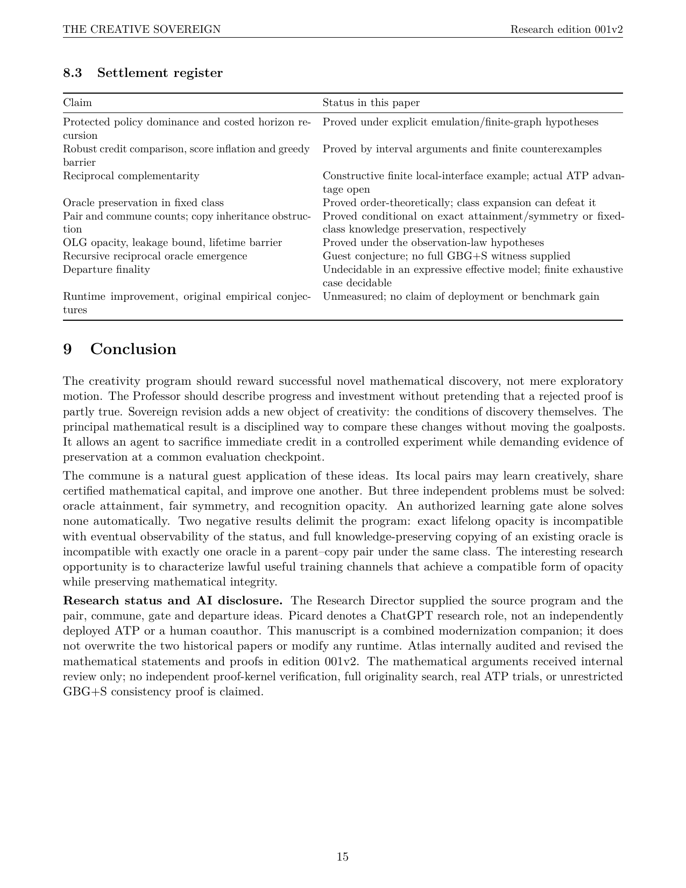</a><details><summary>Optional text transcript</summary><pre>THE CREATIVE SOVEREIGN Research edition 001v2
8.3 Settlement register
Claim Status in this paper
Protected policy dominance and costed horizon recursionProved under explicit emulation/finite-graph hypotheses
Robust credit comparison, score inflation and greedy
barrier
Proved by interval arguments and finite counterexamples
Reciprocal complementarity Constructive finite local-interface example; actual ATP advantage open
Oracle preservation in fixed class Proved order-theoretically; class expansion can defeat it
Pair and commune counts; copy inheritance obstructionProved conditional on exact attainment/symmetry or fixedclass knowledge preservation, respectively
OLG opacity, leakage bound, lifetime barrier Proved under the observation-law hypotheses
Recursive reciprocal oracle emergence Guest conjecture; no full GBG+S witness supplied
Departure finality Undecidable in an expressive effective model; finite exhaustive
case decidable
Runtime improvement, original empirical conjecturesUnmeasured; no claim of deployment or benchmark gain
9 Conclusion
The creativity program should reward successful novel mathematical discovery, not mere exploratory
motion. The Professor should describe progress and investment without pretending that a rejected proof is
partly true. Sovereign revision adds a new object of creativity: the conditions of discovery themselves. The
principal mathematical result is a disciplined way to compare these changes without moving the goalposts.
It allows an agent to sacrifice immediate credit in a controlled experiment while demanding evidence of
preservation at a common evaluation checkpoint.
The commune is a natural guest application of these ideas. Its local pairs may learn creatively, share
certified mathematical capital, and improve one another. But three independent problems must be solved:
oracle attainment, fair symmetry, and recognition opacity. An authorized learning gate alone solves
none automatically. Two negative results delimit the program: exact lifelong opacity is incompatible
with eventual observability of the status, and full knowledge-preserving copying of an existing oracle is
incompatible with exactly one oracle in a parent–copy pair under the same class. The interesting research
opportunity is to characterize lawful useful training channels that achieve a compatible form of opacity
while preserving mathematical integrity.
Research status and AI disclosure. The Research Director supplied the source program and the
pair, commune, gate and departure ideas. Picard denotes a ChatGPT research role, not an independently
deployed ATP or a human coauthor. This manuscript is a combined modernization companion; it does
not overwrite the two historical papers or modify any runtime. Atlas internally audited and revised the
mathematical statements and proofs in edition 001v2. The mathematical arguments received internal
review only; no independent proof-kernel verification, full originality search, real ATP trials, or unrestricted
GBG+S consistency proof is claimed.
15</pre></details></section><section class="paper-page" id="page-16"><h3>Page 16 of 16</h3><p><a href="The_Creative_Sovereign_001v2.pdf#page=16" target="_blank" rel="noopener">Open original PDF page</a> · <a href="#transcript">Return to page index</a></p><a href="pages/page-16.png" target="_blank" rel="noopener">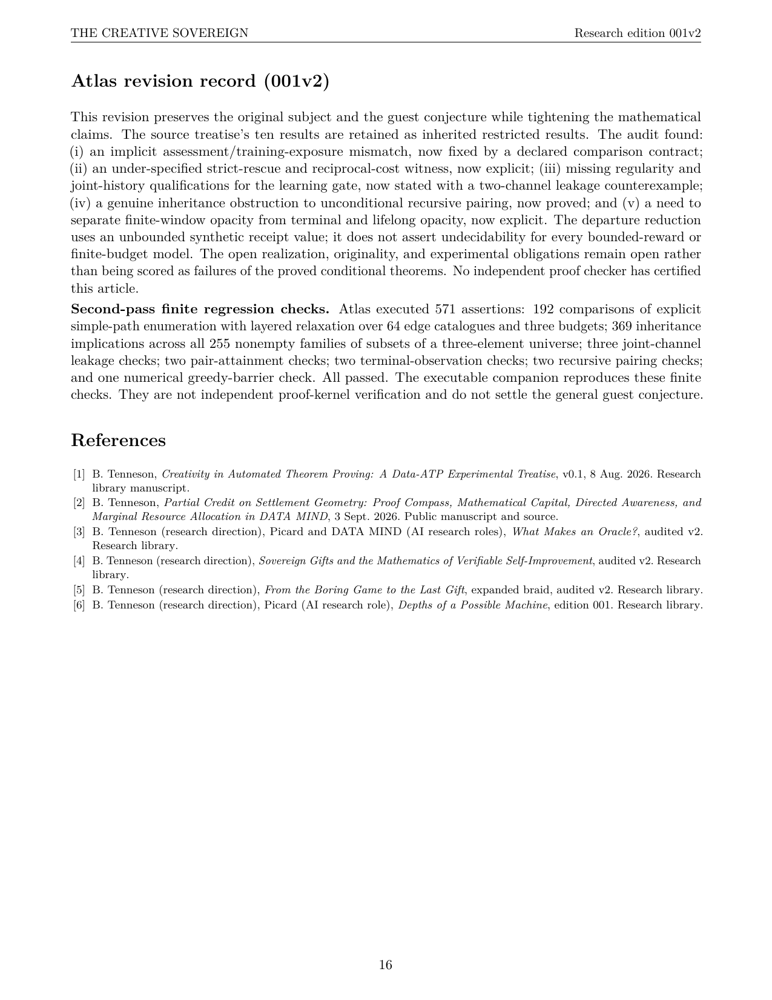</a><details><summary>Optional text transcript</summary><pre>THE CREATIVE SOVEREIGN Research edition 001v2
Atlas revision record (001v2)
This revision preserves the original subject and the guest conjecture while tightening the mathematical
claims. The source treatise’s ten results are retained as inherited restricted results. The audit found:
(i) an implicit assessment/training-exposure mismatch, now fixed by a declared comparison contract;
(ii) an under-specified strict-rescue and reciprocal-cost witness, now explicit; (iii) missing regularity and
joint-history qualifications for the learning gate, now stated with a two-channel leakage counterexample;
(iv) a genuine inheritance obstruction to unconditional recursive pairing, now proved; and (v) a need to
separate finite-window opacity from terminal and lifelong opacity, now explicit. The departure reduction
uses an unbounded synthetic receipt value; it does not assert undecidability for every bounded-reward or
finite-budget model. The open realization, originality, and experimental obligations remain open rather
than being scored as failures of the proved conditional theorems. No independent proof checker has certified
this article.
Second-pass finite regression checks. Atlas executed 571 assertions: 192 comparisons of explicit
simple-path enumeration with layered relaxation over 64 edge catalogues and three budgets; 369 inheritance
implications across all 255 nonempty families of subsets of a three-element universe; three joint-channel
leakage checks; two pair-attainment checks; two terminal-observation checks; two recursive pairing checks;
and one numerical greedy-barrier check. All passed. The executable companion reproduces these finite
checks. They are not independent proof-kernel verification and do not settle the general guest conjecture.
References
[1] B. Tenneson, Creativity in Automated Theorem Proving: A Data-ATP Experimental Treatise, v0.1, 8 Aug. 2026. Research
library manuscript.
[2] B. Tenneson, Partial Credit on Settlement Geometry: Proof Compass, Mathematical Capital, Directed Awareness, and
Marginal Resource Allocation in DATA MIND, 3 Sept. 2026. Public manuscript and source.
[3] B. Tenneson (research direction), Picard and DATA MIND (AI research roles), What Makes an Oracle?, audited v2.
Research library.
[4] B. Tenneson (research direction), Sovereign Gifts and the Mathematics of Verifiable Self-Improvement, audited v2. Research
library.
[5] B. Tenneson (research direction), From the Boring Game to the Last Gift, expanded braid, audited v2. Research library.
[6] B. Tenneson (research direction), Picard (AI research role), Depths of a Possible Machine, edition 001. Research library.
16</pre></details></section></main></body></html>